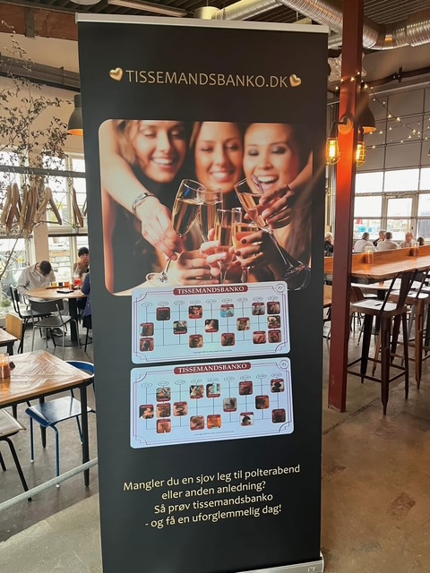

En aften I ikke vidste, I manglede
Er I klar på en aften med røde kinder, latterkramper og de der øjeblikke, hvor man lige tænker: “sagde hun virkelig det?”
Tissemands Bingo er en sjov og anderledes oplevelse til polterabender, fødselsdage og venindeaftener, hvor der er plads til grin, nærvær og lidt mere ærlige snakke.
👉 Book jeres dato her eller ring på 60421852
Jeg kommer med det hele – I skal bare være klar på grin, hygge og en aften, hvor der godt må blive lidt røde kinder.

Vi spiller bingo – bare ikke helt som du kender det.
I stedet for tal får I 90 forskellige tissemænd, som bliver præsenteret én efter én.
Undervejs opstår der grin, kommentarer og de der øjeblikke, hvor ingen helt ved hvad de skal sige – og så siger nogen det alligevel.
Der er selvfølgelig præmier på spil – både det sjove og det lidt mere forkælende.
Bag Tissemands Bingo står en uddannet sexolog.
Det betyder, at aftenen ikke kun handler om at grine – men også om at skabe et trygt rum, hvor der er plads til små refleksioner og samtaler undervejs.
Der er plads til grin, rødmen og de lidt mere ærlige snakke – men altid i et tempo hvor alle kan være med, uden at det føles for meget.
Vi kommer bl.a. omkring:
Typisk for grupper på 6–20 personer.
Tissemands Bingo er et event, jeg tager med ud til jer.
Jeg sørger for:
I skal ikke planlægge noget eller købe ind. I skal bare samle veninderne og være klar på en aften med grin, hygge og god energi.
Glem alt om halvhjertede lege og akavede indslag.
Her får I en oplevelse, hvor stemningen hurtigt bliver afslappet, alle kan være med, og grinene tager over.
Det er den slags aften, man stadig taler om dagen efter.
Varighed: ca. 2 timer
Pris: 2400 kr. + evt. transport
Lokation: Storkøbenhavn og Sjælland
👉 Skriv for booking eller ring på 60421852
Er I i Jylland, afholdes Tissemands Bingo af min kollega Stine Jensen (opfinder af Tissemandsbanko), som arbejder i samme ånd og med samme tilgang.
👉 Kontakt Stine her eller skriv til info@minforandring.dk
Hvis I vil give bruden – eller jer selv – en oplevelse, der er sjov, anderledes og lige tilpas grænseoverskridende, så er Tissemands Bingo et oplagt valg.